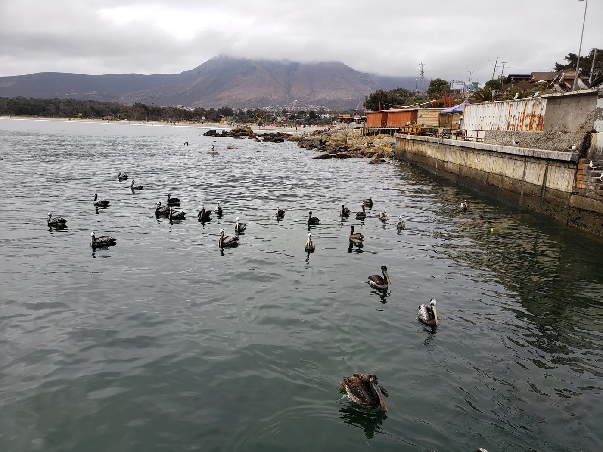
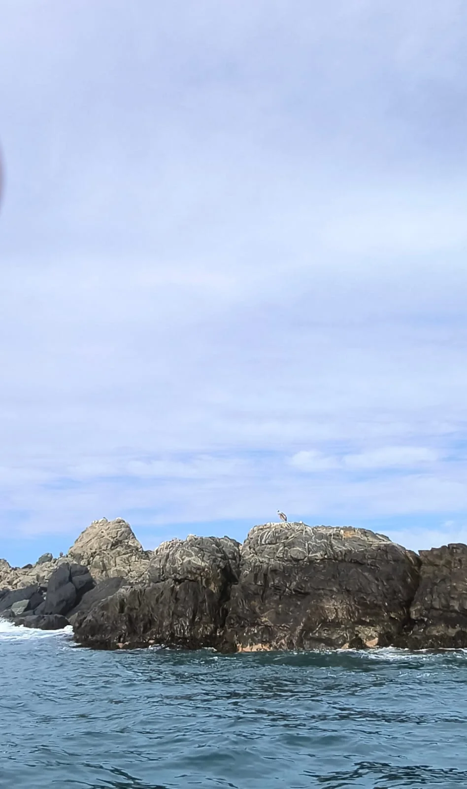
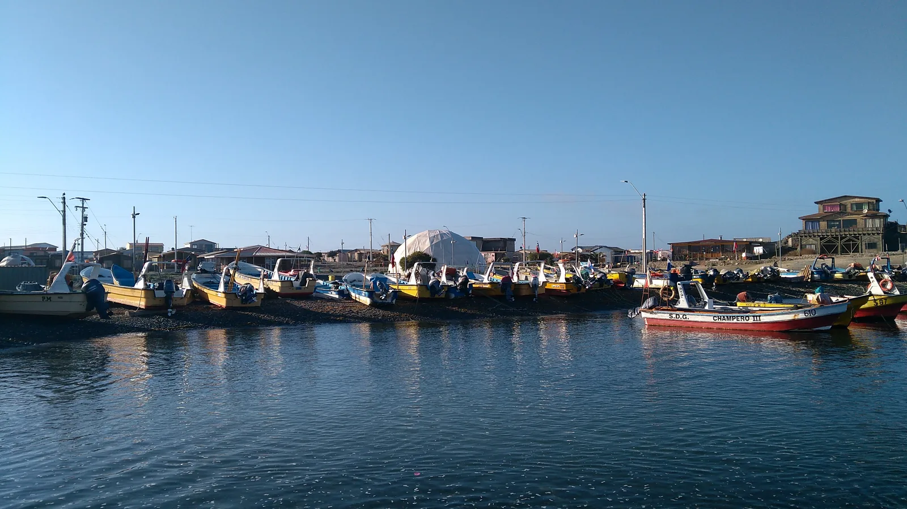
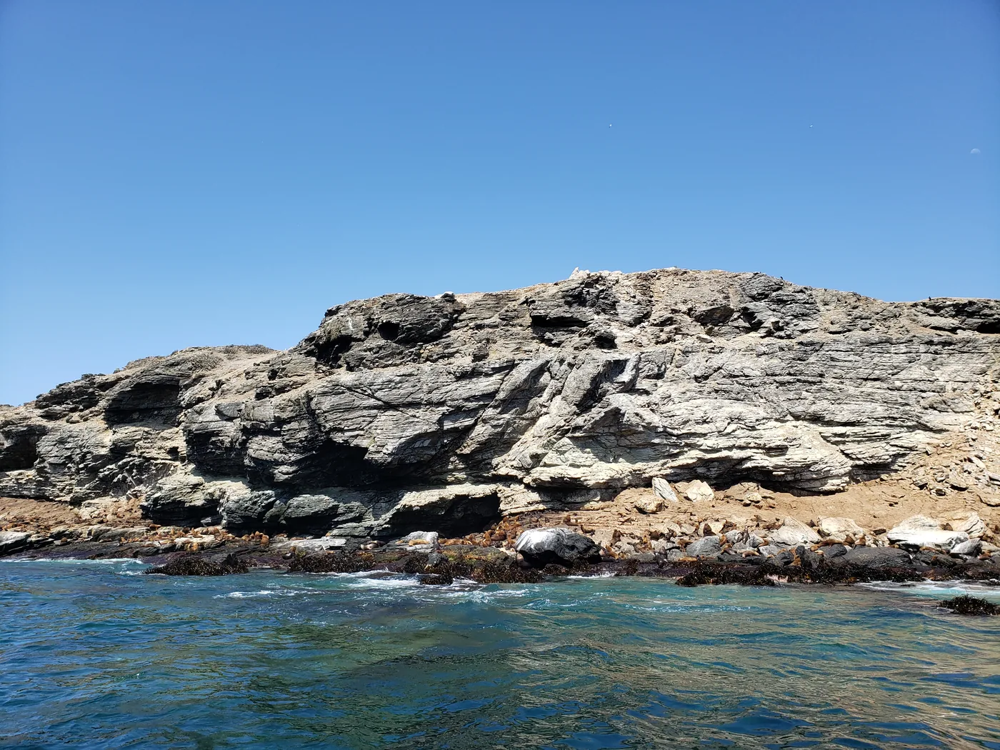
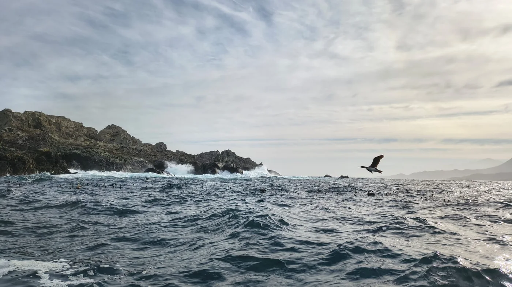
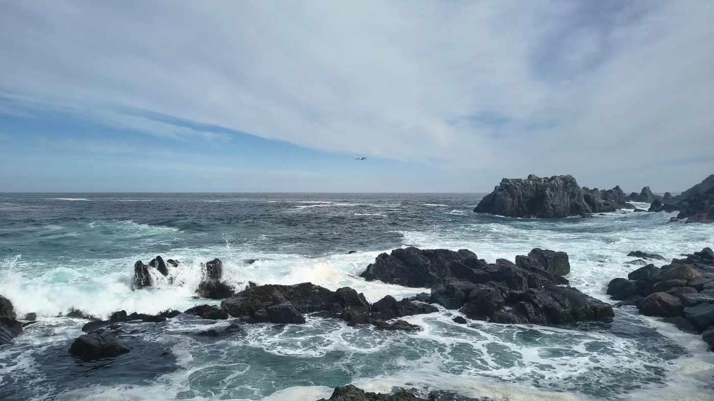
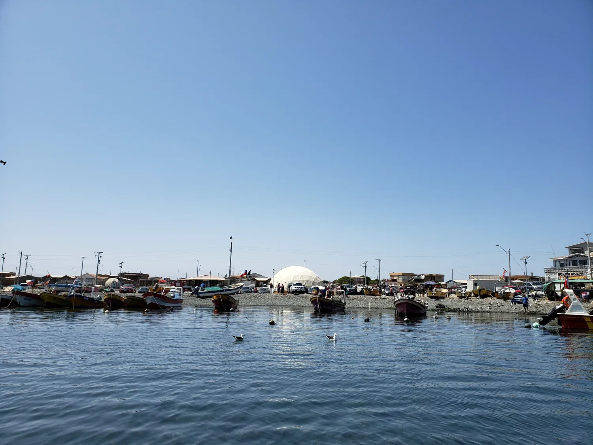

Chungungo · La Higuera · Región de Coquimbo
Foto galería
El archipiélago, su costa y su biodiversidad vistos por quienes andan por
aquí. Toca cualquier foto para ampliarla.
 Albatros de ceja negra
Foto de Tomás, pescador de Chungungo
Albatros de ceja negra
Foto de Tomás, pescador de Chungungo
 Colonia de lobos marinos
Colonia de lobos marinos

Pelícanos
 Lobos marinos en el archipiélago
Lobos marinos en el archipiélago

Islote con aves marinas

Caleta Chañaral de Aceituno

Formaciones rocosas del archipiélago

Ave marina en vuelo
 Colonia de lobos marinos
Colonia de lobos marinos
 Guanacos del desierto costero
Guanacos del desierto costero

Costa rocosa

Caleta Chañaral de Aceituno